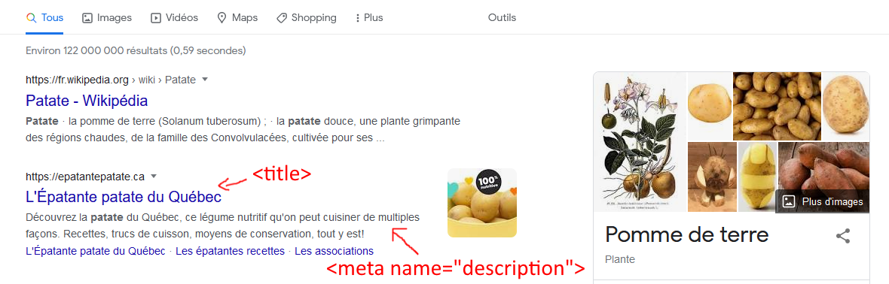
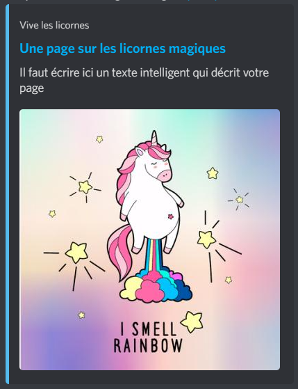
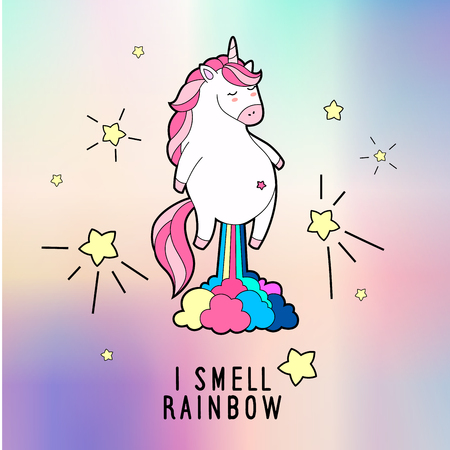

Optimiser le référencement
Une utilisation judicieuse de certaines balise HTML va vous permettre d'améliorer le référencement de votre site par les moteurs de recherche comme Google.
Les balises de la section head
Les balises suivantes doivent être contenu dans la section head de votre page.
La balise title
Non la balise title ne sert pas uniquement à afficher un texte dans l'onglet du navigateur. C'est une balise très importante qui va indiquer au moteur de recherche le sujet de votre page. En plus Google utilise le texte de cette balise dans ses résultats de recherche.
La balise meta
Elle contient un attribut name qui peut prendre plusieurs valeurs et un attribut content qui contient le texte descriptif.
name="description"
Cette valeur sert à décrire brièvement votre page. Elle est aussi utilisé dans la description de votre site dans les résultats de recherche.
<meta name="description" content="Découvrez la patate du Québec, ce légume nutritif qu'on peut cuisiner de multiples façons. Recettes, trucs de cuisson, moyens de conservation, tout y est!">

name="robots"
Elle va définir la façon dont les moteurs de recherche vont indexer votre page. Par défaut si on ne spécifie pas cette balise les robots vont indexer toute votre page. On peut avec l'attribut content modifier et préciser ce comportement. On pourrait par exemple ne pas vouloir que les images de notre page soit indexé et utilisant la valeur noimageindex.
Pour plus de détail sur les possibles valeurs : https://developers.google.com/search/docs/advanced/robots/robots_meta_tag?hl=fr#directives
name="viewport"
Définie la zone de la fenêtre du navigateur où votre page sera affichée. Par défault on va utiliser la valeur suivante :
où with correspond à la largeur de la fenêtre (ici elle sera égale à la taille de l'écran) et initial-scale correspond au niveau de zoom lors de l'affichage initiale de la page.
Pour plus de détail : https://developer.mozilla.org/fr/docs/Web/HTML/Viewport_meta_tag
meta OG
Ces balises ont été créé par Facebook pour controler comment la page s'affiche lorsqu'elle est partagé dans les médias sociaux. Ici dans la balise meta on va utiliser des propriétés comme og:title, og:description et og:image. Vous trouverez ici une liste des propriétés possibles : https://opengraphprotocol.org/
voici un petit exemple qui affichera les prévisualisations suivantes sur Facebook et Discord

<meta property="og:site_name" content="Vive les licornes" />
<meta property="og:title" content="Une page sur les licornes magiques">
<meta property="og:url" content="https://prof.mathieufrechette.ca/">
<meta property="og:description" content="Il faut écrire ici un texte intelligent qui décrit votre page" />
<meta property="og:image" content="/assets/images/cover_social.jpg" />
<meta name="twitter:card" content="summary_large_image" />
Les balises de titres (h1, h2, etc...)
L'utilisation de ces balises aide aussi les robots d'indexation à comprendre la structure de votre page et à bien faire leur travail. N'utilisez qu'une seule balise h1 par page et de préférence utilisez des termes précis dans ces balises.
L'attribut alt de la balise img
Cet attribut permet au moteur de recherche de connaître le contenu d'une image. Il est préférable d'utiliser un court texte qui décrit l'image. Cette information est aussi utilisée par Google Images.
